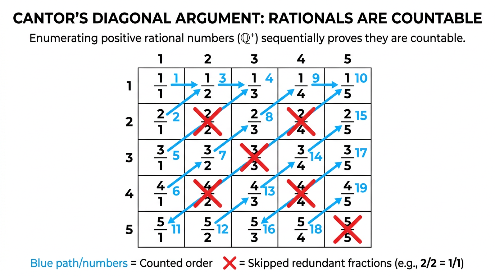
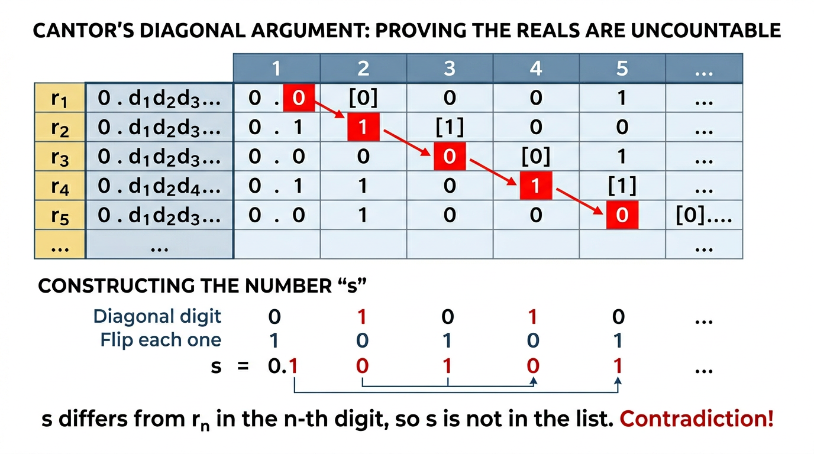

COMP0147 Discrete Mathematics — UCL Year 1
Two sets have the same cardinality iff there exists a bijection between them. This is the fundamental tool for comparing infinite sets.
A set ( X ) has cardinality ( n ) (written ( |X| = n )) if there exists a bijection from ( I_n = {1, 2, \ldots, n} ) to ( X ).
For a finite set ( X ): a function ( f: X \to X ) is injective iff it is surjective.
This fails for infinite sets (e.g. ( f: \mathbb{N} \to \mathbb{N} ) defined by ( f(n) = n+1 ) is injective but not surjective).
An infinite hotel with rooms ( 1, 2, 3, \ldots ), all occupied.
| Scenario | Solution |
|---|---|
| 1 new guest | Shift everyone: guest in room ( n ) moves to ( n+1 ); new guest takes room 1 |
| Infinitely many new guests | Move guest ( n ) to room ( 2n ); new guests fill odd rooms |
| Infinitely many buses, each with infinitely many guests | Use a pairing function, e.g. guest ( j ) from bus ( i ) goes to room ( 2^i \cdot 3^j ) (or zig-zag enumeration) |
Bijection ( f: \mathbb{N} \to P ) defined by ( f(n) = 2n ). Hence ( |P| = |\mathbb{N}| ).
List as: ( 0, 1, -1, 2, -2, 3, -3, \ldots )
Bijection: map ( n \in \mathbb{N} ) to ( \mathbb{Z} ) using a zig-zag pattern.
Arrange positive rationals in a grid (row = numerator, column = denominator). Traverse with a zig-zag (diagonal) path, skipping fractions that aren't in lowest terms. Extend to all of ( \mathbb{Q} ) by interleaving positives, negatives, and zero.


Proof by contradiction on the interval ( [0, 1) ):
Therefore ( [0,1) ) is uncountable, hence ( \mathbb{R} ) is uncountable.
If there exist injections ( f: A \to B ) and ( g: B \to A ), then there exists a bijection between ( A ) and ( B ).
[ |A| \leq |B| \text{ and } |B| \leq |A| \implies |A| = |B| ]
Useful because finding a bijection directly can be hard; instead find injections in both directions.
Question: Is there a cardinality strictly between ( |\mathbb{N}| = \aleph_0 ) and ( |\mathbb{R}| = 2^{\aleph_0} )?
The Continuum Hypothesis asserts no. It is independent of the standard ZFC axioms — it can neither be proved nor disproved (Gödel 1940, Cohen 1963).